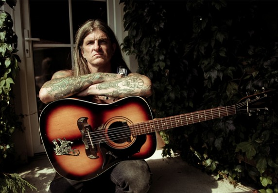

Scott "Wino" Weinrich: Mano de la Muerte
Wino...
Publicado originalmente en Guitar World, abril de 2009
La leyenda del doom metal habla un poco sobre su tono y su álbum debut como solista, Punctuated Equilibrium.
"Tengo casi 50 años y llevo tocando la guitarra desde que tenía ocho años", dice Scott "Wino" Weinrich. "Siempre he pensado que estaba programado para jugar desde que nací".
Ya sea que la naturaleza o la crianza produjeron su vocación, en los últimos 25 años Wino ha definido el sonido moderno del doom metal stoner a través de su influyente trabajo con Obsessed, Saint Vitus y la mano oculta. Ahora, el talento considerable del guitarrista se ha exhibido en su primer álbum en solitario, Equilibrio puntuado (Southern Lord Recordings).
La génesis del álbum se remonta a la separación de Hidden Hand, en 2006. "Todavía tenía un montón de ideas y equipo por ahí", dice Wino, "así que decidí contar con el talento de Jean-Paul Gaster de Clutch en la batería y mi buen amigo John Blank en el bajo ". Combinando la oscuridad oscura y fangosa inspirada en el Sabbath, el riffage al estilo del Grand Funk Railroad y la profunda voz conmovedora de Wino, Punctuated Equilibrium muestra que su sonido característico está vivo y en forma.
El desarrollo del estilo de juego melódico y pesado de Wino se remonta a 1972, cuando, como guitarrista en ciernes de 10 años, vio tocar Black Sabbath. "Eso es básicamente lo que cambió mi vida allí", dice.
Wino abandonó el concierto con una pasión por riffs grandes, corpulentos y ritmos lentos, que usó en su primera banda, The Obsessed. "The Obsessed fue mi primera banda real durante mi adolescencia y mi adolescencia", explica. "Esa experiencia me permitió jugar con muchas bandas divertidas, conocer gente muy agradable y visitar lugares increíbles".
Un tecolote de renombre, Wino dice que la base de su sonido es "una guitarra Les Paul con pastillas DiMarzio Super Distortion conectadas directamente a un amplificador Sunn Model T." Para darle a su tono ese toque extra especial, intercambia los tubos Sunn originales con los tubos de potencia Svetlana 6550s y los tubos de preamplificador Electro-Harmonix. "Ese es realmente el corazón del sonido", dice, "porque es como una caja de fuzz en un tubo de preamplificador".